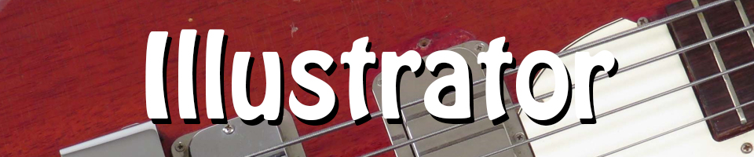

Home |
Photoshop |
Vector |
Animate |
In-Design |
Contact
Now for my vector character! Here’s a cool cat doing the coolest thing: nonchalantly playing bass of course! Since I do a lot of cartoon character doodles, the prospect of tracing some of them with theoretically ‘perfect’ lines and fills was very exciting. This was a doodle I did for my work’s tip jar with the caption “Cool Cats Tip”. I merely put him in the context of a jazz club and ‘Presto!’ - One cool cat!